Einführung
Was ist eigentlich die PrestaShop Plattform?
PrestaShop ist eine kostenlose Plattform für den Internethandel mit dem Open Source. Sie unterstützt Zahlungssysteme wie Google checkout, paypal oder payments pro per APIs.
PrestaShop ist unter den Bedingungen der Open Source Software (Open Software Licence) verfügbar und wurde im August 2007 offiziell für kleine und mittlere Unternehmen gestartet. Diese Plattform wurde auf der Basis von Smarty Engine entwickelt, die Tausende Online-Shops weltweit verwenden.
Was ist eigentlich eine PrestaShop Vorlage?
PrestaShop Vorlage ist das Thema für die Internethandel-Plattform PrestaShop. Sie bietet breite Möglichkeiten zur Bearbeitung und ermöglicht eine Online-Shop zu erstellen, der völlig Ihren Anforderungen entsprechen wird.
Dateistruktur
Die gekaufte Vorlage besteht aus einigen Ordnern. Lassen Sie uns den Inhalt jedes Ordners überprüfen:
- screenshots - enthält Bildschirmfotos des Themas. Für die Arbeit mit der Vorlage braucht man sie nicht.
- sources.zip - enthält die Quelldateien des Themas.
- sources
- psd - sind Dateien der Vorlage im Format Adobe Photoshop (.psd)
- sources
- theme - enthält die Dateien des Themas PrestaShop
- manual_install - Dateien für manuelle Installation
- img - Bilder für manuelle Installation
- modules - Module für manuelle Installation
- themes - Dateien des Themas für manuelle Installation
- dump.sql - Datei mit den Demodaten für manuelle Installation
- sample_data - enthält die Dateien für die Installation mit den Demodaten mit Hilfe vom Modul sampledatainstall
- themeinstallator - enthält das Archiv für automatische Installation des Themas
- theme####.zip - Archiv des Themas. Es enthält alle Dateien des Themas. Es wird mit Hilfe von der Standard-Installationsmethode in PrestaShop installiert
- manual_install - Dateien für manuelle Installation
- fonts_info.txt - Datei mit Links zum Herunterladen von Schriften, die in der Vorlage verwendet werden.
- info.txt - Anleitung zum Entpacken von Quelldateien
Arbeitsbeginn
Vorbereitung
Bebor Sie anfangen die PrestaShop Webseite zu installieren, müssen Sie alles völlig vorbereiten. Führen Sie, bitte, die folgenden Schritte aus:
Software
Um mit der Vorlage arbeiten zu können, müssen Sie alle notwendigen Anwendungen herunterladen. Die Liste von notwendigen Softwares befindet sich auf der Vorschauseite der Vorlage. Die Anforderungen an verschiedenen Vorlagen können sich unterscheiden, deswegen nennen wir nur die wichtigsten:
- Vor allem brauchen Sie die richtigen Anwendungen, um passwortgeschütztes Archiv sources_#########.zip zu entpacken.Sie können WinZip 9+ (Windows) und Stuffit Expander 10+ (Mac) nutzen.
- Sie können auch das Programm Adobe Photoshop benötigen. Es wird benutzt, um die Quelldateien .PSD zu bearbeiten oder das grafische Design und Bilder der Vorlage zu ändern.
- Um den Quellcode der Vorlagendateien zu bearbeiten, müssen Sie den Code-Editor wie Adobe Dreamweaver, Notepad++, Sublime Text usw. nutzen.
- Um die Dateien auf den Hosting-Server hochzuladen, brauchen Sie den FTP-Kunden wie Total Commander, FileZilla, CuteFTP usw.
Anforderungen an Server
Überzeugen Sie sich, bitte, dass Ihr Hosting-Server den PrestaShop Anforderungen entspricht:
- System: Unix, Linux oderи Windows. Empfehlenswert ist Unix.
- Webserver: Apache Web server 1.3 oder höher, Microsoft's IIS Web server 6.0 oder höher, und nginx 1.0 oder höher.
- PHP 5.2* oder höher.
- MySQL 5.0 oder höher.
- Mindestens 32 MB Arbeitsspeicher auf dem Server (empfehlenswert ist 64 Mb, je mehr, desto besser).
PrestaShop funktioniert mit PHP 5.1 oder höher, weil die Versionen vor 5.2 Fehler enthalten. Aus diesem Grund funktionieren einige Funktionen nicht korrekt (zum Beispiel, falsches Datum der Zeitzonen).
Verwendung des lokalen Servers
PrestaShop kann auf dem Personalcomputer mit Hilfe von dem lokalen Server installiert werden. Um den lokalen Hosting-Server zu erstellen, sollen Sie die Softwares wie WAMP, AppServ, MAMP usw. nutzen. Jede von ihnen wird wie normales Programm installiert, das PrestaShop unterstützt.
Sie können die folgenden Tutorials nutzen, um den lokalen Server einzustellen:
Herunterladen
Um PrestaShop zu installieren, laden Sie die PrestaShop Engine von der offiziellen Website herunter www.prestashop.com/en/downloads
Geben Sie den Namen und die E-Mail-Adresse ins Downloadfeld ein und drücken Sie auf den Button 'Herunterladen'.
Überzeugen Sie sich, bitte, dass die Version PrestaShop den Vorlagenanforderungen entspricht. Alle Versionen PrestaShop sind unter dem Link SourceForgeverfügbar.
Entpacken von Dateien
Nachdem Sie die PrestaShop Engine heruntergeladen haben, sollen Sie die Dateien und Ordner aus dem Archiv entpacken.
Dies können Sie mit Hilfe von jeglichem Archivierungsprogramm, zum Beispiel, WinZip(PC), StuffitExpander(MAC), usw. machen.
Nutzen Sie die folgenden Tutorials, um die Archive mit Hilfe von WinZip(PC) und StuffitExpander(MAC) zu entpacken.
Achtung: wenn es im Control Panel desHosting die Option zur arbeit mit Dateien 'Entpacken'gibt, können Sie sie nutzen, um die Dateien auf dem Server nach dem Hochladen von .zip Archiven zu entpacken.
Hochladen von Dateien der PrestaShop Engine
Wenn Sie das Archiv lokal (auf Ihrem Computer) entpackt haben, sollen Sie die Dateien aufs Hosting hochladen.
Dafür können Sie den Dateimanager im Control Panel des Hostings oder eine von den FTP Anwendungen wie: FileZilla, TotalCommander, CureFTP usw. nutzen.
Sie können auch die ausführliche Video-Anleitung anschauen Wie lädt man die Dateien auf den Server per FTP-Kunde hoch und Wie lädt man die Dateien per cPanel (WebHost Manager, WHM) hoch.
Installation der PrestaShop Engine
Nachdem Sie alle Dateien hochgeladen haben, können Sie anfangen die PrestaShop Engine zu installieren. Öffnen Sie den Webbrowser und geben Sie den Domainnamen oder den Pfad zum Verzeichnis PrestaShop in der Adresszeile ein, dann aktualisieren Sie die Seite. Es sollte das Begrüßungsfenster angezeigt werden. Folgen Sie den folgenden Anleitungen, um PrestaShop zu installieren.
Schritt 1: Installer (Wählen Sie die Sprache)
Wählen Sie die Installationssprache
Achtung: die Installationssprache wirkt auf Spachen des Online-Shops nicht. Standardmäßig wird in PrestaShop Englisch installiert. Sie können zusätzliche Lokalisierungspakete installieren, um die Sprache des Online-Shops nach der Installation PrestaShop zu ändern

Nachdem Sie die Sprache ausgewählt haben, drücken Sie auf den Button 'Weiter'
Schritt 2: Installer (Lizenzvereinbarung)
Machen Sie sich mit der Lizenzvereinbarung bekannt.

Dann drücken Sie auf den Button 'Weiter'.
Schritt 3: Systemkompatibilität
Überprüfen Sie PHP Einstellungen und Verzeichnisberechtigungen. Falls es Fehler gibt, setzen Sie sich mit dem Hosting-Anbiert in Verbindung, damit er Ihnen helfen kann.

Wenn es keine Fehler gibt, drücken Sie auf den Button 'Weiter'.
Schritt 4: Einstellung des Online-Shops
Jetzt müssen die Einstellungen des Online-Shops wie Name, Tätigkeit, Land, Zeitzone usw. festgelegt werden.
Alle diesen Einstellungen können Sie später im Control Panel PrestaShop ändern.

Schritt 5: Systemeinstellungen
Wenn Sie die Datenbank MySQL schon haben, geben Sie die Details in entsprechende Felder ein.
Ansonsten können Sie die Details der Datenbank im Control Panel des Hosting finden oder den Kontakt mit den Hosting-Anbieter aufnehmen.

Danach drücken Sie auf den Button 'Weiter'.
Schritt 6: Installation ist abgeschloßen
Der letzte Installationsschritt.

Aus Sicherheitsgründen muss der Ordner /install/ auf dem Server entfernt werden.
Ab der Version 1.5.4 benennt PrestaShop den Administrationsordner automatisch um: der Name sieht wie "admin" mit 4 Zufallszahlen, zum Beispiel, "admin8814" aus. Die Umbenennung wird durchgeführt, sobald Sie zum ersten Mal den Ordner "admin" im Browser öffnen: PrestaShop benennt ihn um und öffnet dann schon umbenannten Ordner.
Loggen Sie sich ins Control PanelВ PrestaShop ein, indem Sie umbenanntes Verzeichnis "admin" nutzen, und fangen Sie an, den Katalog mit Ihren Daten zu füllen.
Loggen Sie sich ins Control PanelВ PrestaShop ein, indem Sie umbenanntes Verzeichnis "admin" nutzen, und fangen Sie an, den Katalog mit Ihren Daten zu füllen.
Falls Sie auf Schwierigkeiten stoßen, nutzen Sie die offizielle Anleitung zur PrestaShop Installation.
Installation der Vorlage
1. Import des Themas
Achtung: diese Methode wird nicht Demodaten installieren.
1. Vorbereitung der VorlageПодготовка шаблона.
Bevor Sie anfangen, überzeugen Sie sich, dass Sie die Vorlagendateien heruntergeladen und entpackt haben. Sie können ausführliche Tutorials nutzen, um die Dateien aus dem Archiv der Vorlage mit Hilfe von WinZip und StuffitExpander zu entpacken.
Nachdem Sie die Dateien entpackt haben, können Sie die Vorlage hochladen.
2. Installation.
Loggen Sie sich ins Control Panel PrestaShop ein und gehen Sie in Preferences -> Themes (Einstellungen -> Themata). In der oberen Ecke drücken Sie den Button Add new theme (Neues Thema hinzufügen).

Klicken Sie auf den Button Add file (Datei hinzufügen) im Bereich Import from your computer (Import von Ihrem Computer). Finden Sie die entpackte Vorlage und öffnen Sie den Ordner themeinstallator.
Wählen Sie die .zip Datei des Themas und drücken Sie Save (Speichern).

Der Hochladen-Prozess wird gestartet. Dann werden Sie die Mitteilung sehen, dass das Thema erfolgreich hochgeladen wurden. Das Icon des neuen Themas wird in der Liste von installierten Themeten dargestellt.

Um das Thema zu aktivieren, positionieren Sie den Cursor über das Icon des Themas und drücken Sie Use this theme (Dieses Thema verwenden).

Sie werden das Fenster mit der Information über verwendete im Thema Module und Anzahl von Modulen, die aktiviert oder deaktiviert werden, sehen. Um fortzufahren, klicken Sie Save (Speichern).

Danach wird das DropDownFenster mit der Mitteilung angezeigt, dass das Thema erfolgreich aktiviert wurde: das Thema wurde erfolgreich installiert und Bilder zu festgelegten im Thema Berechtigungen angepasst. Um die Installation anzuschließen, drücken Sie auf den Button Finish (Abschließen).

2. Automatische Installation mit den Demodaten (Modul Sample data installer)
Nachdem Sie Demodaten installiert haben, wird Ihr Online-Shop PrestaShop wie auf der Demoversion aussehen. Er wird alle Produkte, Kategorien und Einstellungen für Module und den Online-Shop enthalten.
Nutzen Sie, bitte, die Demodaten für aktuelle Webseite nicht, weil alle Produkte und Einstellungen überschrieben werden.
Um die Demodaten mit Hilfe vom Modul модуль Sample data installer zu installieren, folgen Sie der Anleitung aus dem Schritt 1 (Import des Themas) dieser Dokumentation. Dann wird im Control Panel des Online-Shops das Modul Sample data installer angezeigt.
Mit Hilfe von diesem Modul kann man einfach die Demodaten installieren. Machen Sie das Folgende:
-
Im Control Panel drücken Sie "Install Demo Store (Demo-Shop installieren)".
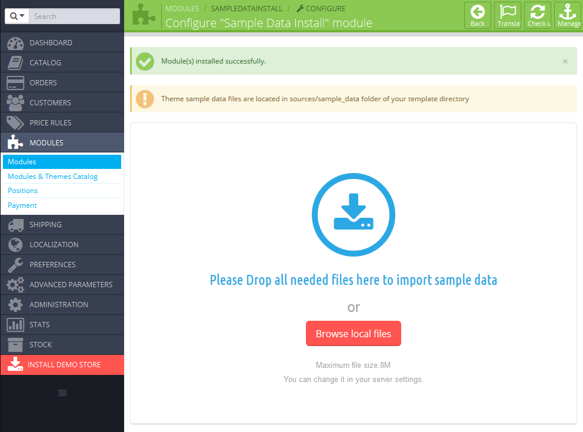
-
Dann sollen Sie die Dateien von Demodaten aus dem Ordner 'sample_data' markieren und hochladen. Dies können Sie anhand des Buttons "Browse local files (Dateien finden)" machen oder die Dateien in das Browserfenster verschieben.
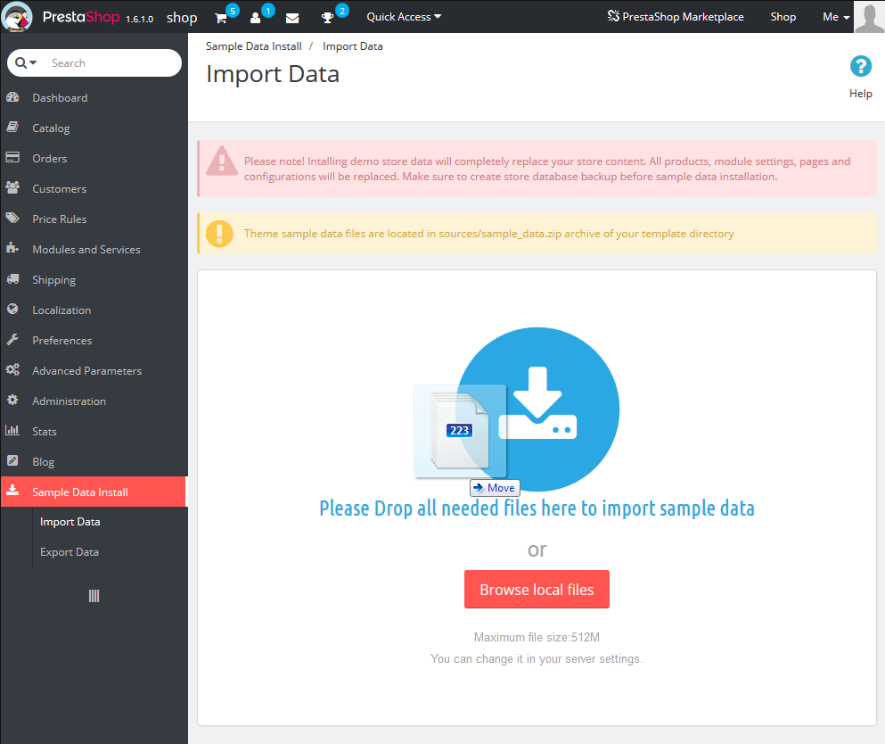
-
Warten Sie bis das Hochladen von Dateien abgeschlossen wird.
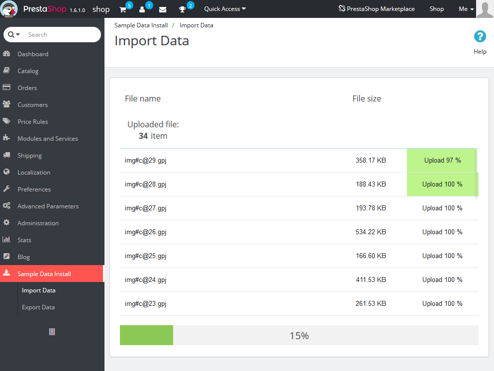
-
Drücken Sie den Button "Continue Install (Installation fortfahren)".
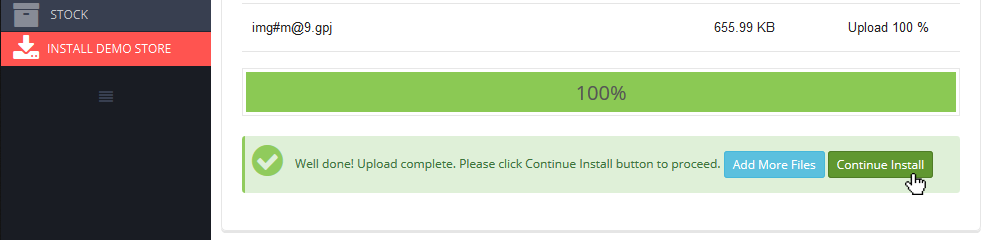
-
Danach wird das Modul Sample data installer automatisch den Online-Shop und andere Module einstellen. Es kann einige Minuten dauern.
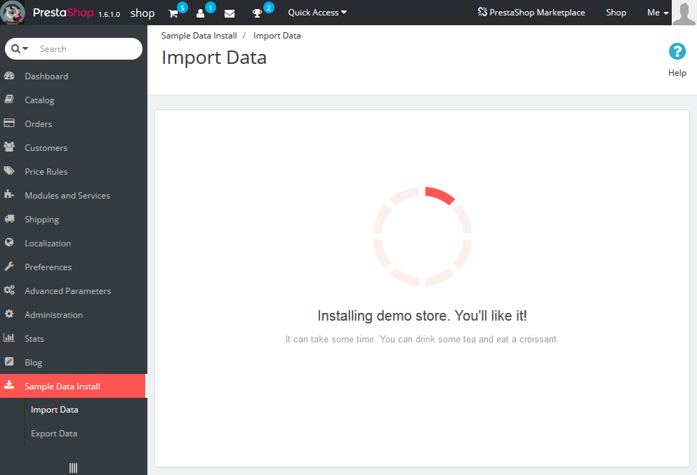
-
Nachdem Sie die Demodaten installiert haben, müssen Sie noch eine Aktion durchführen. Regenerieren Sie die Bilder. Drücken Sie den Button "Go To Regenerate Page (Zur Regenerationsseite gelangen)".
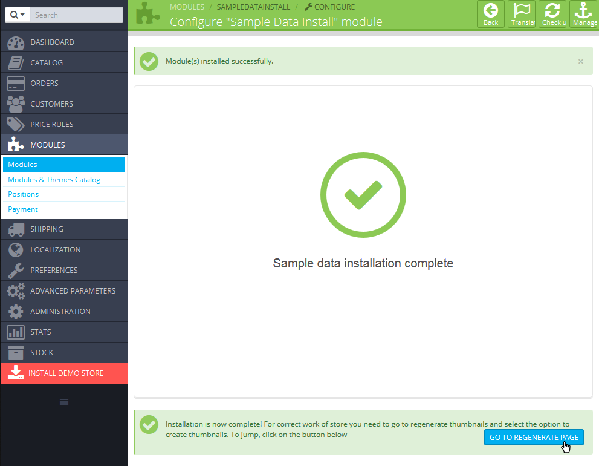
-
Um die Bilder zu regenerieren, klicken Sie den Button "Regenerate thumbnails (Vorschaubild regenerieren)".
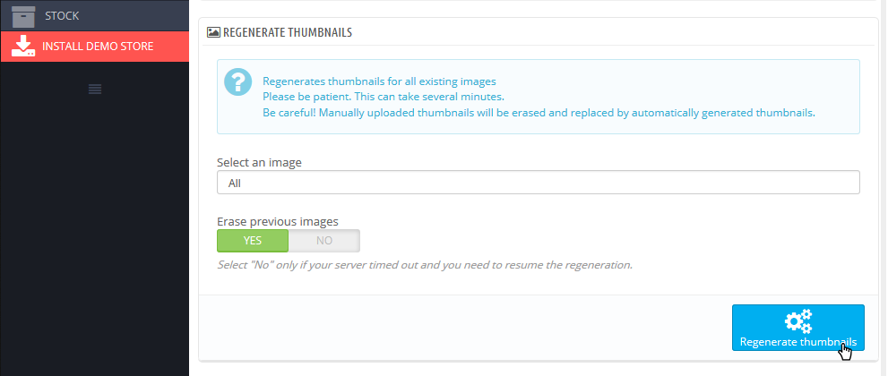
3. Manuelle Installation der Vorlage mit Demodaten
Nachdem Sie Demodaten installiert haben, wird Ihr Online-Shop von PrestaShop wie auf der Demoversion aussehen. Er wird alle Produkte, Kategorien, Einstellungen für Module und den Online-Shop enthalten.
Nutzen Sie, bitte, keine Demodaten für aktuelle Webseite! Dies wird alle Produkte und Einstellungen des Online-Shops überschrieben.
1. Hochladen von Vorlagendateien
Um die Dateien auf den Server hochzuladen:
- Öffnen Sie den Ordner Ihrer Vorlage.
- Gehen Sie in den Ordner /theme/manual_install/.
- Laden Sie die Ordner /img/, /modules/ und /themes/ ins Stammverzeichnis PrestaShop hoch.
Sie können auch die ausführlichen Video-Tutorials anschauen wie lädt man die Dateien auf den Server per FTP-Kunde hoch und wie lädt man die Dateien auf den Server per cPanel (WebHost Manager, WHM) hoch.
2. Installation von Demodaten
Die Demodaten befinden sich in der Datei .SQL. Sie befindet sich im Ordner theme/manual_install/ Ihrer Vorlage und heißt dump.sql.
Die Datei dump.sql kann man mit Hilfe von phpMyAdmin oder anderen Datenbank-Verwaltungswerkzeugen im Control Panel des Hostings installieren. Diese ausführliche Anleitung kann für Sie hilfreich sein wie importiert man SQL Dateien.
Bevor Sie anfangen die Dateien zu importieren, erstellen Sie die Sicherungskopie der Datenbank. Sie können sich das ausführliche Video-Tutorial darüber anschauen wie erstellt man die Sicherungskopie der Datenbank.
Überzeugen Sie sich, dass die Version der PrestaShop Engine den Anforderungen Ihrer Vorlage entspricht. Andernfalls wird die Datenbank beschädigt.
Nachdem Sie die Datei dump.sql importiert haben, sollen Sie die Vorlage aktivieren.
Im Control Panel PrestaShop gehen Sie in Preferences > Themes (Einstellungen > Themen), wählen Sie die Vorlage aus der Liste Themes (Themen) und drücken Sie Save (Speichern).
3. Hinzufügen von Sprachen zum Online-Shop.
Nachdem Sie mehrsprachige Vorlage installiert haben, können Sie zum Ihren Online-Shop jegliche Sprachen, die verfügbar sind, (Englisch, Französisch, Spanisch, Deutsch, Russisch) hinzufügen. Dies können Sie wie folgt machen:
Gehen Sie in 'Localization > Translations (Lokalisierung> Übersetzungen)' im Control Panel, finden Sie 'ADD/UPDATE A LANGUAGE (SPRACHE HINZUFÜGEN/AKTUALISIEREN)', markieren Sie die Sprachen aus dem DropDownMenü (1) und drücken Sie den Button 'Add or update a language (Sprache hinzufügen oder aktualisierenк)' (2).

Wenn Sie irgendwelche Sprachen nicht benötigen, können Sie (2) sie (1) im Menü 'Localization > Languages (Lokalisierung> Übersetzungen)' entfernen oder deaktivieren.

4. Installation der Vorlage auf den aktuellen Online-Shop
Diese Installationsmethode müssen Sie in dem Fall nutzen, wenn Sie schon eine aktuelle Webseite von PrestaShop haben und nur die Vorlage installieren möchten.
1. Hochladen von Vorlagendateien und Aktivierung des Themas
- Öffnen Sie den Ordner Ihrer Vorlage.
- Gehen Sie in den Ordner /theme/.
- Laden Sie die Ordner /modules/ und /themes/ ins Stammverzeichnis PrestaShop hoch.
Sie können sich die ausführlichen Video-Tutorials darüber anschauen wie lädt man due Dateien auf den Server per FTP-Kunde hoch und wie lädt man due Dateien auf den Server per cPanel (WebHost Manager, WHM) hoch.
Im Control Panel PrestaShop gehen Sie in Preferences > Themes (Einstellungen > Themen), wählen Sie das installierte Thema (auch können Sie das aktuelle Thema wählen). Drücken Sie auf den Button Advanced settings (Erweiterte Einstellungen).
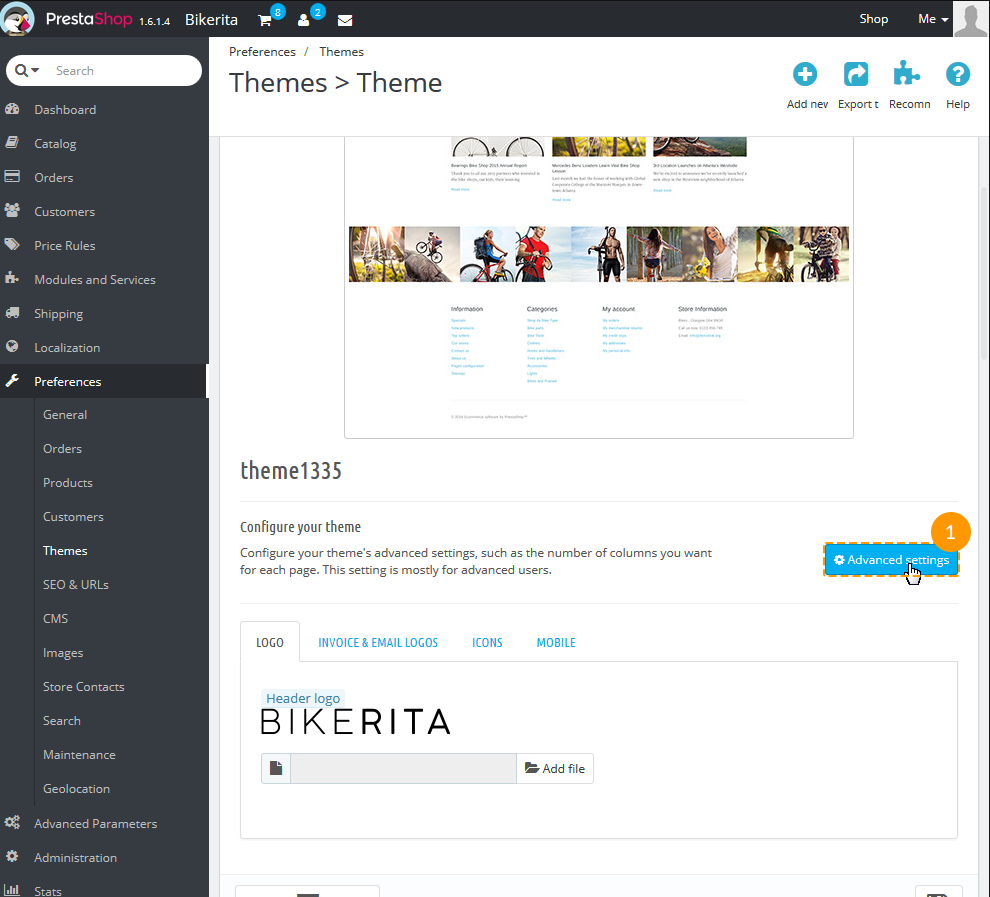
-
In dem DropDownFenster legen Sie das Verzeichnis mit dem neuen Thema fest und drücken Sie auf den Button Save (Speichern).
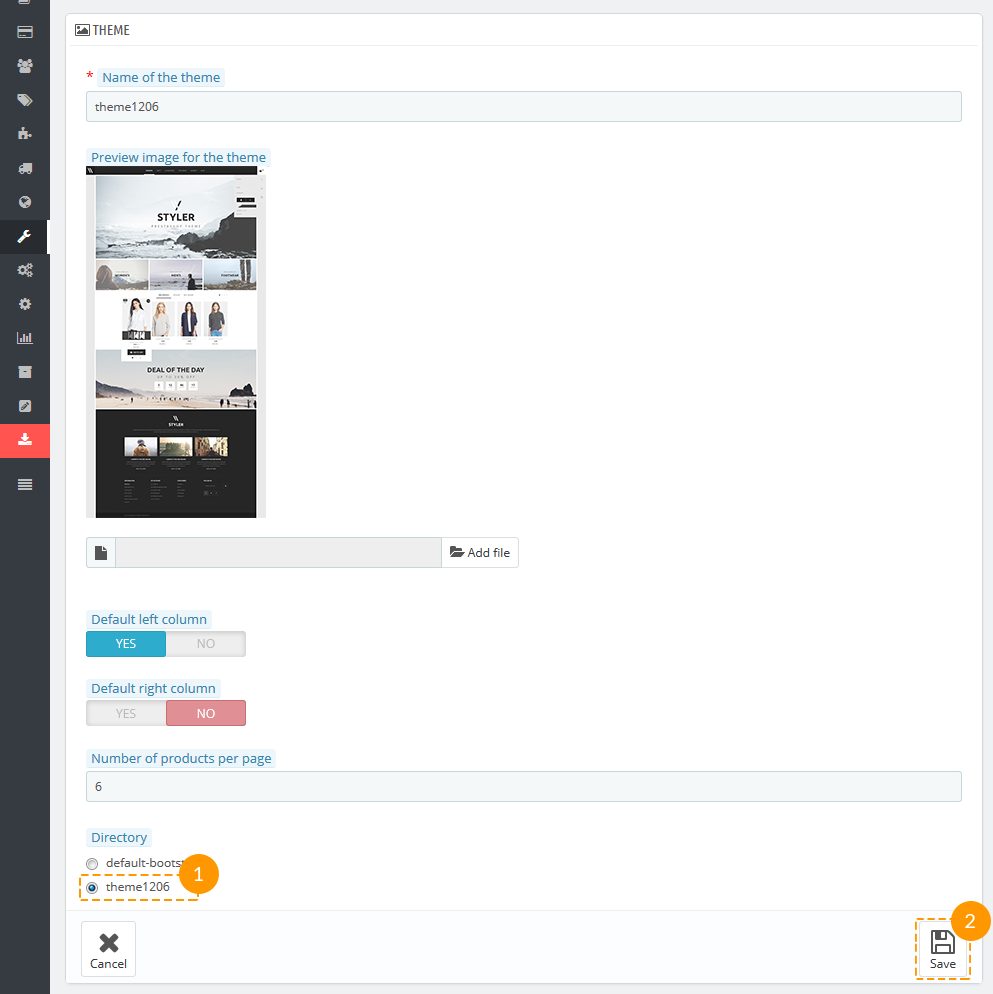
2. Installation von Modulen
Jede Vorlage enthält bestimmte Einstellungen für Module. Damit die Module wie auf der Demoversion aussehen, müssen sie eingestellt werden. Alle Module werden im Control Panel PrestaShop eingestellt.
1. Im Control Panel PrestaShop wählen Sie Modules > Modules (Module > Module) im Hauptmenü.
Auf der Modulseite befindet sich die Liste von allen verfügbaren Modulen PrestaShop. Einige von ihnen müssen installiert werden.
Um das Modul zu installieren, finden Sie es in der Liste und drücken Sie auf den Button 'Install (Installieren)'.

Indem Sie die Links des Moduls nutzen, können Sie es aktivieren/deaktivieren (Links Enable (Aktivieren)|Disable (Deaktivieren)), auf die Vorgaben zurücksetzen (Link Reset (Zurücksetzen)), das Modul (Link Delete (Entfernen)) entfernen oder (Link Configure (Einstellen)) einstellen.

2. Nachdem Sie notwendige Module aktiviert haben, sollen Sie sie in der richtigen Position platzieren.
Im Control Panel PrestaShop wählen Sie Modules > Positions (Module > Positionen) im Hauptmenü. Um das Modul in der notwendigen Position zu platzieren, ziehen Sie es einfach im Block in der Liste der Module.

3. Anpassen von Bildern
In PrestaShop kann man festgelegte Berechtigungen für Produktbilder, Kategorien, Hersteller usw. nutzen.
Normalerweise werden die Bildergrößen wie 'home' für Bilder in der Kategorienliste 'large' für Hauptproduktbild auf der Produktseite benutzt.
Um die Bildauflösungen einzustellen, öffnen Sie das Control Panel PrestaShop, gehen Sie in Preferences > Images (Einstellungen > Bilder) und installieren Sie die Bildergröße, wie es auf der Seite Configuration Page (Vorlageneinstellungen) Gemo geschrieben ist.
Haupttutorials
1. Wie ändert man den Shopnamen
Um den Shopnamen zu ändern, öffnen Sie das Control Panel PrestaShop und gehen Sie in Preferences > Store Contacts (Einstellungen > Kontaktdaten des Online-Shops), Bereich Contact details (Kontaktdaten).
Im Feld Shop name (Shopname) geben Sie den Namen für den Online-Shop ein und drücken Sie den Button Save (Speichern) um die Änderungen zu speichern.

2. Wie bearbeitet man den Slider
Um die Bilder des Sliders zu bearbeiten, finden Sie das Modul Image slider for your homepage (Diashow für die Hauptseite) auf der Seite Modules (Module) des Online-Shops von PrestaShop. Es befindet sich im Bereich Front Office Features (Funktionen front-office). Klicken Sie den Button Configure (Einstellen), um das Modul zu bearbeiten.

Auf der Seite der Moduleinstellungen kann man die Optionen für den Slider (zum Beispiel, Breite, Geschwindigkeit, usw.) ändern und das Dia (Bilder für den Slider, URL, Beschreibung usw.) zu bearbeiten.

Benutzerdefinierte Module und Erweiterungen
Smart Blog
Smart blog - ist ein Modulsatz, der ermöglicht, den Blog im Online-Shop zu erstellen. Er besteht aus den folgenden Modulen: Smart Blog, RSS Feed Smart Blog, Archiv Smart Blog , Kategorien Smart Blog , Neues auf der Hauptseite, Neueste Kommentare Smart Blog, Modul für soziale Netzwerke Smart Blog , Beliebte Beiträge Smart Blog, Neueste Beiträge Smart Blog, Ähnliche Beiträge Smart Blog, Suche Smart Blog, Tags Smart Blog. Er enthält auch eigene Blöcke, in denen Module des Blogs auf der Webseite dargestellt werden. Dazu können sie in Standardblöcken (nur Spalten) platziert werden.
Smart Blog
Es ist das Hauptmodul mit verschiedenen Einstellungen für den Blog. Nachdem Sie es installiert haben, wird im Control Panel im Hauptmenü ein neuer Tab Blog dargestellt, wo Sie Beiträge/Kategorien hinzufügen/entfernen/bearbeiten oder Arten und Bildauflösung, die in den Beiträgen verwendet werden, (Arten und Bildauflösung von Beiträgen unterscheiden sich von Einstellugen für Bilder im Online-Shop) wählen können. Um die Einstellungen zum Moduldarstellung auf der Webseite hinzuzufügen, gehen Sie in Smart Blog (Modules->Front Office Features->Smart Blog) ((Module->Funktionen front-office->Smart Blog)) und fügen Sie alle Optionen hinzu.
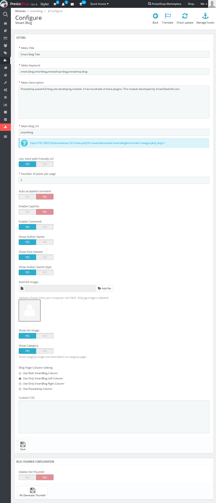
Parameterbeschreibung:
- Meta Title (Meta-Titel) - Titel des Blogs, der auf allen Seiten dargestellt wird.
- Meta Keyword (Meta-Schlüsselwörter) - Schlüsselwörter, die von Suchmaschinen für bessere SEO-Optimierung benutzt werden.
- Meta Description (Meta-Beschreibung) - Blogbeschreibung, die von Suchmaschinen für bessere SEO-Optimierung benutzt werden
- Main Blog Url (Haupt-URL des Blogs) - URL Ihres Blogs.
- Use .html with Friendly Url (.html zum freundlichen Link hinzufügen) - aktiviert/deaktiviert die Hinzufügung .html zum freundlichen Link.
- Number of posts per page (Anzahl von Beiträgen pro Seite) - Anzahl von Beiträgen, die auf der Seite dargestellt werden (Kategorieseiten/Archivs usw.).
- Auto accepted comment (Automatische Hinzufügung von Kommentaren) - aktiviert/deaktiviert automatische Hinzufügung von Kommentaren. Wenn Sie diesen Parameter aktivieren, werden Kommentare ohne Überprüfung hinzugefügt.
- Enable Captcha (Captcha aktivieren) - aktiviert/deaktiviert Captcha unter dem Formular "Kommentar hinterlassen" auf der Produktseite.
- Enable Comment (Kommentare aktivieren) - aktiviert/deaktiviert Kundenkommentare.
- Show Author Name (Namen des Autors zeigen) -aktiviert/deaktiviert die Darstellung von Autor des Beitrags auf den Blogseiten
- Show Post Viewed (Angeschaute Beiträge zeigen) - aktiviert/deaktiviert die Darstellung von Beiträgen, die Benutzer schon gesehen haben. Dies befindet sich unter den Beiträgen auf den Bloseiten oder einzelnen Beitragsseite.
- Show Author Name Style (Format für den Namen des Autors) - ändert das Format für den Namen des Autors.
- AVATAR Image: (Foto:) - fügt das Standardfoto für alle Benutzer hinzu.
- Show No Image (Bild "Kein Foto" zeigen) - aktiviert/deaktiviert das Standardfoto. Dies wird für diejenigen Beiträge/Kategorien usw. benutzt, die kein Bild haben.
- Show Category (Kategorien zeigen) - aktiviert/deaktiviert die Darstellung von Bildern und Kategoriebeschreibungen auf den Kategorieseiten des Blogs.
- Blog Page Column Setting (Spaltenformat für Blogseiten) - Einstellung, die verbundene mit dem Blog Module darstellt. Sie enthält oft zusätzliche Einstellungen, deswegen ist es besser, die Standardmethode zu nutzen, um die zusätzlichen Module im Control Panel PrestaShop zu installieren.
- Custom CSS (Benutzerdefinierte CSS) - in diesem Feld kann man zusätzliche Stile hinzufügen. Nutzen Sie vorsichtig aktuelle Klassen des Themas, weil Probleme unter den Stilen entstehen können.
- Delete Old Thumblr (Altes Vorschaubild entfernen) - wird benutzt, um die Bilder des Blogs zu aktualisieren (nachdem die Bildauflösungen geändert oder eine neue Art hinzugefügt wurden). Um es hinzuzufügen, wählen Sie Yes (Ja) und drücken Sie Regenerate (Aktualisieren).
NUR DANACH können verbundene mit dem Blog Module installiert werden. Der Entfernungsprozess ist umgekehrt, WEIL ZUERST ALLE ZUSÄTZLICHEN MODULE und dann nur dieses Modul Smart Blog ENTFERNT WERDEN MÜSSEN.
RSS Feed Smart Blog
Das Modul erzeugt einen RSS-Feed für den Blog.
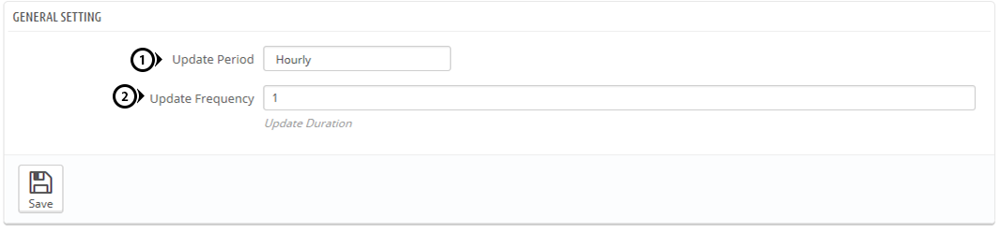
Es enthält einige Einstellungen im Control Panel:
- Update Period (Aktualisierungsintervall) - ermöglicht die Beiträge für eine bestimmte Zeitdauer (Stunde/Tag/Woche/Monat/Jahr) darzustellen.
- Update Frequency (Aktualisierungshäufigkeit) - ermöglicht die Aktualisierungshäufigkeit (1 Woche, 2 Stunden, usw.) festzulegen.
Oben befindet sich der Pfad zur Datei, wo die Nachrichten erzeugt werden. Sie besteht aus URL der Webseite + /modules/smartblogfeed/rss.php.
Archiv Smart Blog
Dieser Block wird in der linken/rechten Spalte dargestellt und sortiert die Beiträge nach dem Zeitraum (Monat).
Er hat keine zusätzlichen Einstellungen.
Kategorien Smart Blog
Dieser Block wird in der linken/rechten Spalte dargestellt und sortiert die Beiträge nach Kategorien.
Er hat keine zusätzlichen Einstellungen.
Neues auf der Hauptseite
Dieser Block befindet sich nur in der Position homepagecontent und zeigt die letzten Beiträge auf der Hauptseite.
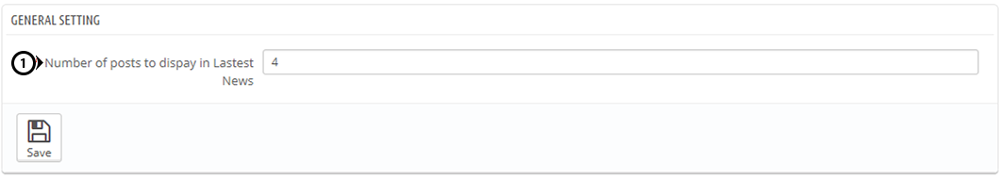
Einstellungen:
- Number of posts to display in Latest News (Anzahl von dargestellten Beiträgen in den letzten Nachrichten) - die Anzahl von Beiträgen auf der Hauptseite.
Neueste Kommentare Smart Blog
Dieser Block wird in der linken/rechten Spalte dargestellt und zeigt die neuesten Kommentare zu Beitägen des Blogs.
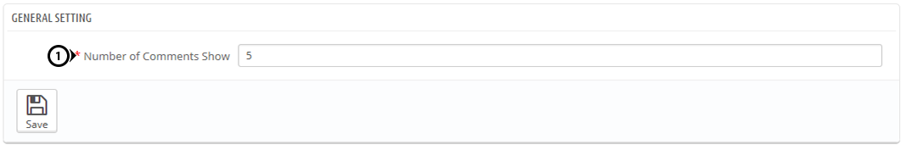
Einstellungen:
- Number of Comments to Show (Anzahl von den dargestellten Kommentaren) - die Anzahl von Kommentaren im Block.
Modul für soziale Netzwerke Smart Blog
Der Blöcke stellt sich auf den Beitragsseite dar und ermöglicht den Beitrag in sozialen Netzwerken zu teilen.
Er hat keine zusätzlichen Einstellungen.
Beliebte Beiträge Smart Blog
Dieser Block wird in der linken/rechten Spalte dargestellt und zeigt häufig angeschaute Beiträge des Blogs.
Einstellungen:
- Number of popular Posts to Show (Anzahl von dargestellten beliebten Beiträgen) - die Anzahl von beliebten Beiträgen im Block.
Neueste Beiträge Smart Blog
Dieser Block wird in der linken/rechten Spalte dargestellt und zeigt die neuesten Beiträge des Blogs.
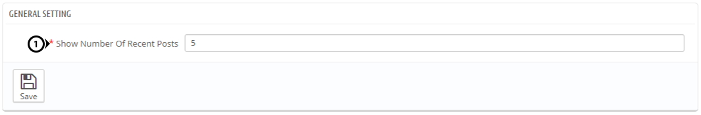
Einstellungen:
- Show Number Of Recent Posts (Anzahl von den dargestellten neuesten Beiträgen) - die Anzahl von den neuesten Beiträgen im Block.
Suche Smart Blog
Dieser Block wird in der linken/rechten Spalte dargestellt und ermöglicht die Suche im Blog durchzuführen.
Er hat keine zusätzlichen Einstellungen.
Tags Smart Blog
Dieser Block wird in der linken/rechten Spalte dargestellt und ermöglicht Tags des Blogs darzustellen.
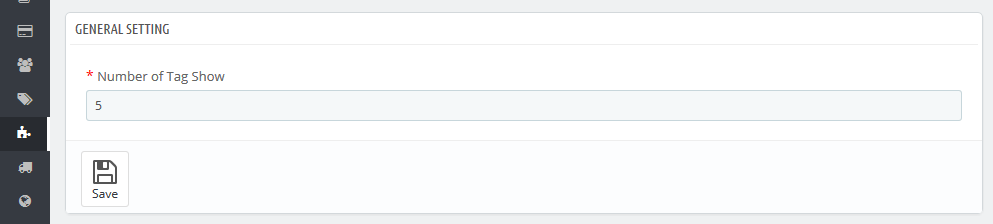
Einstellungen:
- Number of Tag to Show (Anzahl von dargestellten Tags) - die Anzahl von Tags im Blog.
Modul Media Parallax
Was ist eigenlich ein Parallax-Effekt (parallax)?
Parallax-Scrolling ist eine spezielle Scrolling-Technik in der Computergraphik. Dank diesem Effekt bewegen sich die Bilder im Hintergrund langsamer als im Vordergrund. Dadurch wird die Illusion der Tiefe und des zweidimensionalen Videospiel erstellt. Ab 2011 begannen Webdesigner das Parallax-Scrolling umzusetzen. Dafür haben sie HTML5 und CSS3 verwendet. Webseiten mit dem Parallax-Effekt sind gefragt geworden, weil er sie beweglich macht. Außerdem zieht der Parallax-Effekt scharfe Aufmerksamkeit der Kunden und macht jede Webseite einzigartig. Das Parallax-Scrolling verbessert das Aussehen der Webseite und ermöglicht dynamisches, interaktives Interface für Benutzer zu erstellen.
Dieses Modul fügt den Parallax-Effekt zur Webseite ohne zusätzliche Fähigkeiten und Mühe hinzu. Als Hintergrund können Sie Bilder oder Videos hinzufügen.
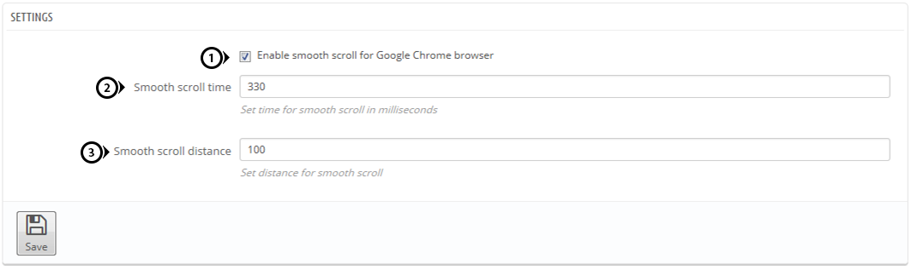
Einstellungen: (nur für Google Chrome)
- Enable smooth scroll for Google Chrome browser (Weiches Scrolling für den Browser Google Chrome hinzufügen) - zusätzlichen Effekt hinzufügen.
- Smooth scroll time (Zeit von weichem Scrolling) - Zeit von weichem Scrolling.
- Smooth scroll distance (Entfernung von weichem Scrolling) - Entferunung von weichem Scrolling.
Hinzufügung vom Modul Media parallax
- Es ist empfohlen, die Klasse oder den Index zum Inhalt der HTML Seite hinzuzufügen. Sie können auch einzigartigen Tag, der nicht wiederholt wird, nutzen.
- Erstellen Sie das Bild mit der notwendigen Größe (am besten ist, wenn das Bild größer als Größen des Blocks, zu dem der Effekt hinzugefügt wird, ist). Wenn Sie das Video verwenden möchten, müssen Sie es dann in drei Formaten: .mp4,.webm und .ogv vorbereiten und auch das Vorschaubild, das die gleiche Größe hat, (.png, .jpg und .gif) hinzufügen
-
Klicken Sie auf den Button Add container (Container hinzufügen) in Add new block (Neuen Block hinzufügen).
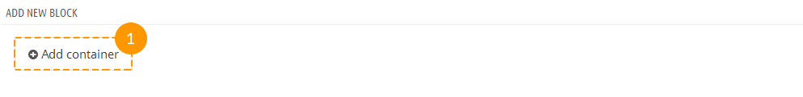
-
In dem DropDrownFenster legen Sie alle notwendigen Einstellungen fest.
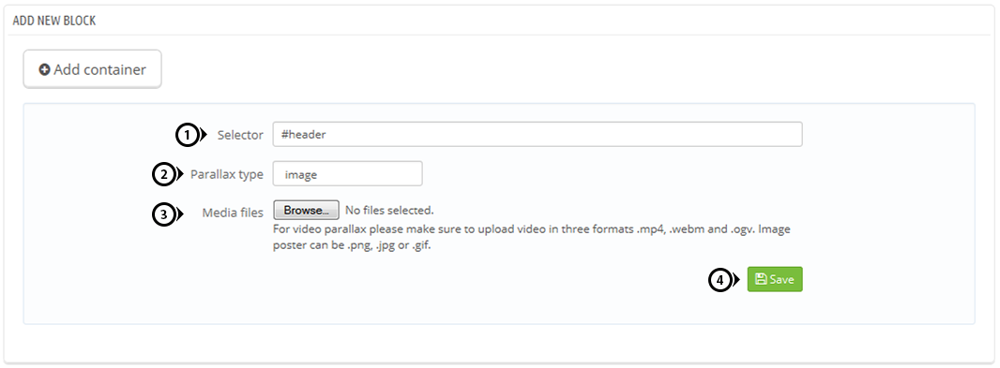
Einstellungen:
- Selector (Selector) - das Element, zu dem der Effekt (Index oder einzigartiger Tag) hinzugefügt wird.
- Parallax type (Parallax Art) - die Art des Effekts, die verwendet wird (Bild oder Video).
- Media files (Mediendateien) - laden Sie alle notwendigen Dateien hoch.
- Drücken Sie auf den Button Save (Speichern).
Einstellungen für das Modul Media parallax
-
In der Liste von Parallax-Blöcken finden Sie den notwendigen und ändern Sie die Einstellungen.
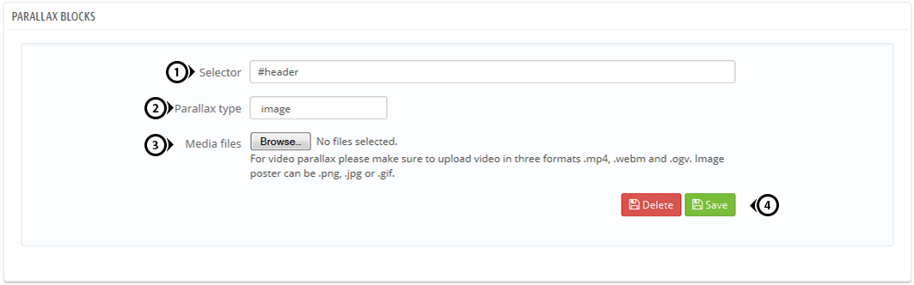
Entfernen des Moduls Media parallax
-
In der Liste von Parallax-Blöcken finden Sie den notwendigen und drücken Sie den Button Delete (Entfernen).
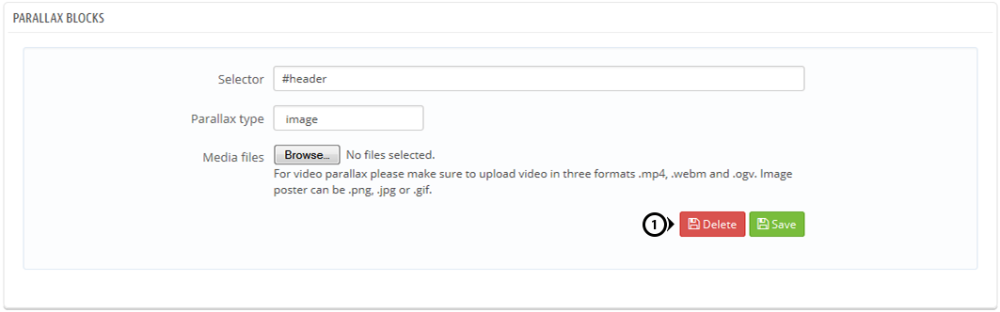
Modul Video Background (Videohintergrund)
Das jeweilige Modul ermöglicht das Video zum Hintergrund jegliches Blockes der HTML Seite (das Element muss den Index oder einzigartigen Tag haben) hinzuzufügen.
Um den Videohintergrund hinzuzufügen, machen Sie das Folgende:
- Laden Sie die Video-Dateien und Vorschaubilder in den Ordner modules/tmvideobackground/video (oder einen anderen Ordner auf dem Server) per FTP hoch. Das Video muss in drei Formaten: .mp4, .ogv, .webm hochgeladen werden und alle Dateien müssen die gleichen Namen (ocean.mp4, ocean.ogv, ocean.webm) haben. Die Vorschaubilder müssen auch in drei Formaten: .jpg, .gif, .png sein die gleichen Namen (ocean.jpg, ocean.gif, ocean.png) haben.
- Im Control Panel öffnen Sie Video background module (Modul für den Videohintergrund) (Modules->Front Office Features->Video background module (Module->Funktionen front-office->Modul für den Videohintergrund)) und wählen Sie die notwendgen Einstellungen aus.
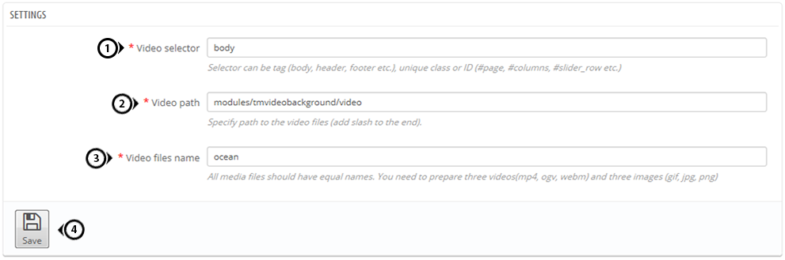
Einstellungen:
- Video selector (Video-Selektor) - Element der HTML Seite, zu der der Videohintergrund (Index oder einzigartiger Tag (body, header, footer, usw.) hinzugefügt wird.
- Video path (Pfad zum Video) - Pfad zu Video-Dateien (der Pfad muss am Ende / haben), die Dateien können sich in jeglichem Ordner auf dem Server befinden, aber laden Sie sie am besten ins Verzeichnis modules/tmvideobackground/video/ hoch.
- Video files name (Name von Video-Dateien) - Namen von Video-Dateien. Man muss nur den Namen (es muss kein Format sein. Zum Beispiel,"ocean") hinzufügen.
- Drücken Sie auf den Button Save (Speichern).
Um das Video darzustellen, muss das Element keinen anderen Hintergrund haben.
Modul TM HTML Content
Das jeweilige Modul ermöglicht jeglichen Inhalt (Bild, HTML, Links, usw.) in den folgenden Positionen: displayNav, home, top, topColumn, left und right (displayLeftColumn/displayRightColumn), footer darzustellen. Es wird benutzt, um die Möglichkeiten des Designs zu erweitern und Werbung/Informationsblöcke zur Webseite hinzuzufügen. Es ist ein mehrsprachiges Modul, das Sie auch in dem mehrsprachigen Online-Shop nutzen können.
Um den Inhalt hinzuzufügen, machen Sie das Folgende:
-
Gehen Sie in Modules->Front Office Features->TM HTML Content (Module->Funktionen front-office->TM HTML Content) (wenn es nicht installiert wurde, installieren Sie es).
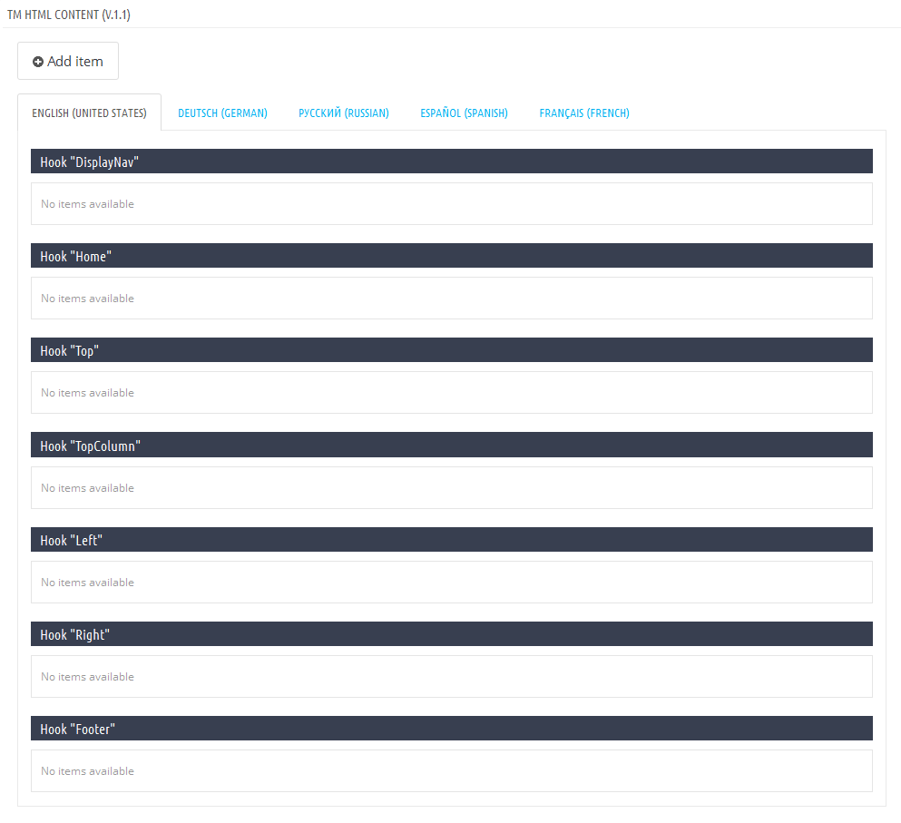
- Drücken Sie auf den Button Add new (Neu hinzufügen).
- Die Liste von den verfügbaren Sprachen. Sie können verfügbare Elemente für alle Sprachen anschauen, indem Sie Tabs von Sprachen umschalten.
- Die Liste von Elementen, die für eine bestimmte Position oder Sprache hinzugefügt wurden.
-
Hinzufügen vom Element. Drücken Sie auf den Button Add item (Element hinzufügen) und füllen Sie die notwendigen Einstellungen (es gibt keine Pflichtfelder) aus.
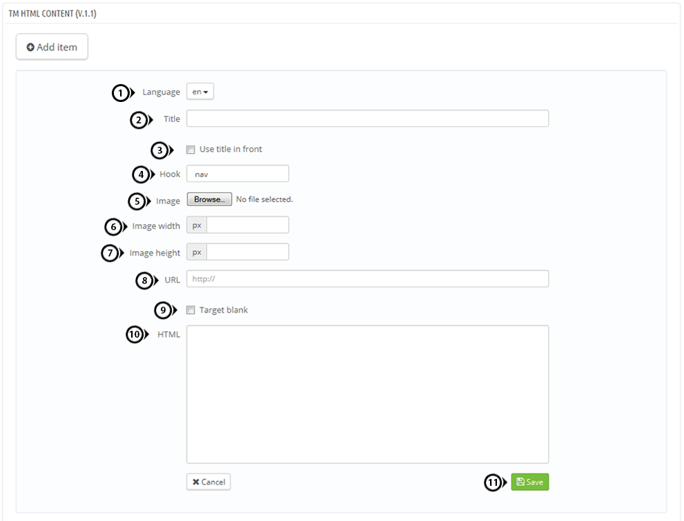
- Language (Sprache) - wählen Sie die notwendige Sprache aus der DropDownListe.
- Title (Titel) - Titel für das Element.
- Use title in front (Namen auf der Webseite anzeigen) - Titel des Elementes auf der Webseite darstellen.
- Hook (Block) - Position, zu der das Element hinzugefügt wird.
- Image (Bild) - Laden Sie das Bild von dem Computer hoch.
- Image width (Bildbreite) - Bildbreite auf der Webseite.
- Image height (Bildhöhe) - Bildhöhe auf der Webseite.
- URL - Hinzufügung des Links (der gesamte Block wird mit dem Link).
- Target blank - Link in dem neuen Tab öffnen.
- HTML - HTML Code (außer dem Link, der zum Feld URL hinzugefügt wurde) oder Text.
- Save (Speichern) - Button, um das Element zu speichern.
Alle Elemente einer Sprache, die zur gleichen Position hinzugefügt wurden, werden als Liste im Control Panel auf der Webseite dargestellt. -
Bearbeiten und Löschen eines Elements
Wenn Sie das Element hinzufügen, wird in der entsprechenden Liste dargestellt.
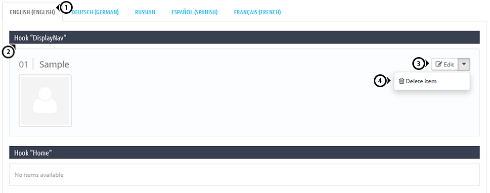
- Sprache, zu der das Element hinzugefügt wurde.
- Position, zu der das Element hinzugefügt wurde.
- Button Edit (Bearbeiten) in der DropDownListe.
- Button Delete (Löschen).
Editing (Bearbeitung)
-
Drücken Sie Edit (Bearbeiten), um das Element zu ändern.
In dem DropDownFenster ändern Sie alle notwendigen Felder.
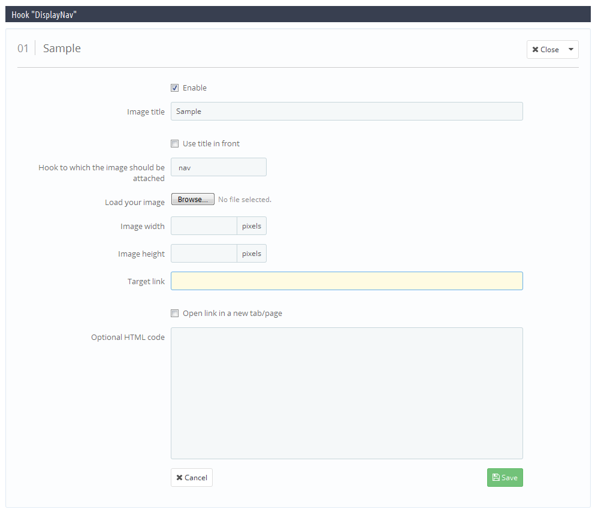
- Enable (Aktivieren) - das Element auf der Webseite darstellen.
- Image title (Titel des Bildes) - Titel des Elementes.
- Use title in front (Namen auf der Webseite zeigen) - Titel des Elementes auf der Webseite darstellen.
- Hook to which the image should be attached (Block, in dem das Element platziert werden muss) - Position des Elementes.
- Load your image (Laden Sie das Bild hoch) - Bild des Elementes.
- Image width (Bildbreite) - Bildbreite auf der Webseite.
- Image height (Bildhöhe) - Bildhöhe auf der Webseite.
- Target link (Link) - Hinzufügen des Links zum Element.
- Open link in a new tab/page (Link in einem neuen Tab oder einer neuen Seite öffnen) - Link in einem neuen Tab öffnen.
- Optional HTML code (Benutzerdefinierter HTML Code) - Bearbeitung vom HTML Code.
- Save (Speichern) - Buttom, um das Element zu speichern.
-
Änderungen der Elementreihenfolge in der Liste
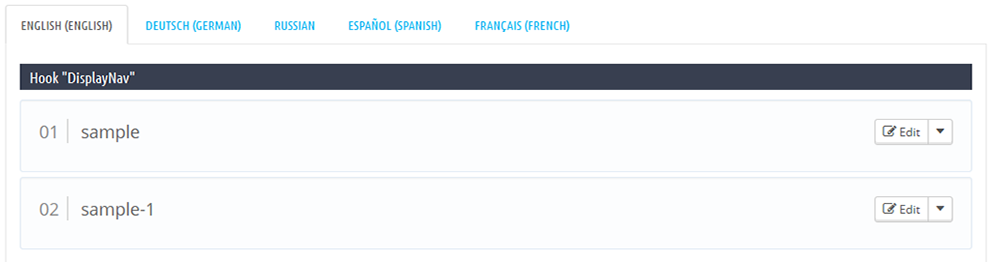
Um die Elementreihenfolge zu ändern, ziehen Sie es in die notwendige Position.
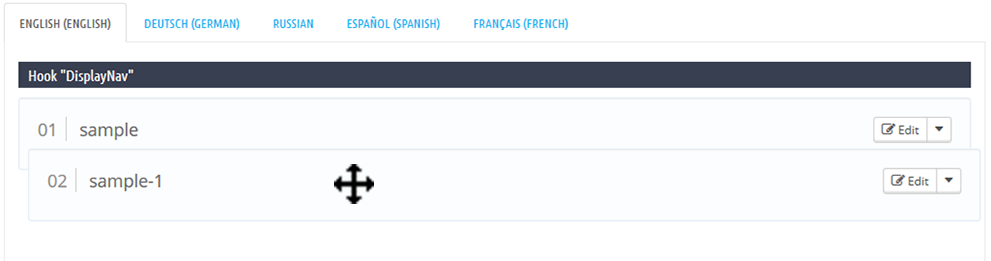
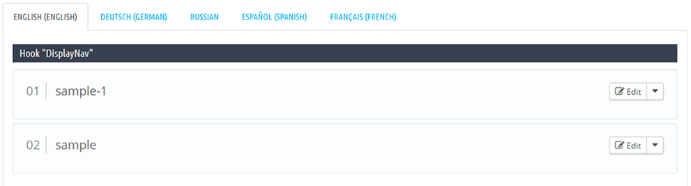
TM Categories Badges
This module allows to add badges to the sidebar categories of the default Prestashop Categories module ("Blockcategories"). The badges can be added to the category of any level and in any language. The text field of the label is mandatory and should be filled in all languages. If this field is left blank in any language, then it will automatically take the text of the default language.
The module is installed and deleted like any other Prestashop module.
Module Configuration
After installation you can change its settings on the module configuration page.
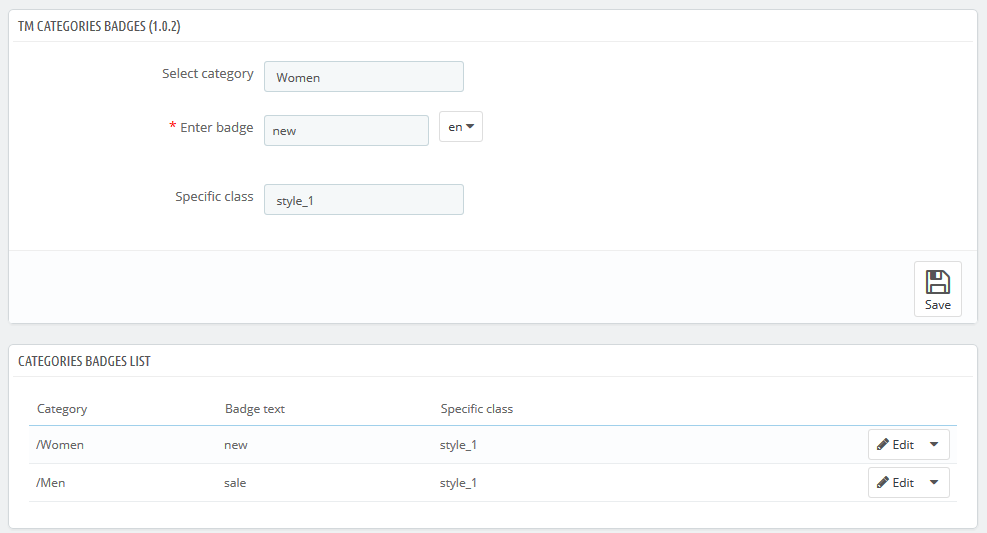
You can add badges to any category after selecting it from the drop down list. Attention! You can add only one badge for each category. Then, you can add text that will show up in the badge and select the style from the drop-down list (the styles may differ in different templates).
You can see the list of existing badges below. Here you can edit or delete badges with the help of corresponding buttons.
The module is multilanguage and supports the multi-stores. You can add badges for group of stores or all stores at once. They will show up in the list as separate elements.
TM Google Map
This module allows to add Google map with your stores location and short description about them on your front page. The map will show up the addresses of all stores related to your online shop. You can edit your stores details under Preferences->Store Contacts tab.
Installation and Deleting
The module is installed and deleted like any other Prestashop module.
Module configuration
After installation you can change its settings on the module configuration page.
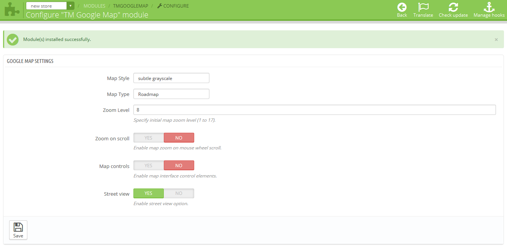
You can configure the style and elements of your map.
Select the map style from the first list (all styles are taken from Snazzymaps). You can also add the style from this website. Find instructions on adding them at the end of this instruction.
Select the view type from the second list (satellite view or street view).
You can also select the zoom ratio for your map from 1 to 17.
Zoom option if scrolling on the map area.
You can disable the map control and ability to view the streets.
The module supports the multi-stores. You can change the map styles for each store.
Adding custom styles
You can add any custom style from Snazzymaps to your module. To do this, you should select the style from the website, copy JavaScript Style Array to .js file and save it in the module folder /js/styles/(for the file name use the style name replacing the spaces with underscores and removing all special characters. For example: for Subtle Grayscale style - subtle_grayscale.js file, for Apple Maps-esque style - apple_maps-esque.js file). Then, navigate to your module configuration page and select the required style from the styles drop-down list.
TM Manufacturers Block
This module shows up manufacturers available in your store. The list of manufacturers may consist of the image and title. The list can also show up as a carousel.
Installing and Deleting
The module is installed and deleted like any other Prestashop module.
Module configuration
After installation you can change its settings on the module configuration page.
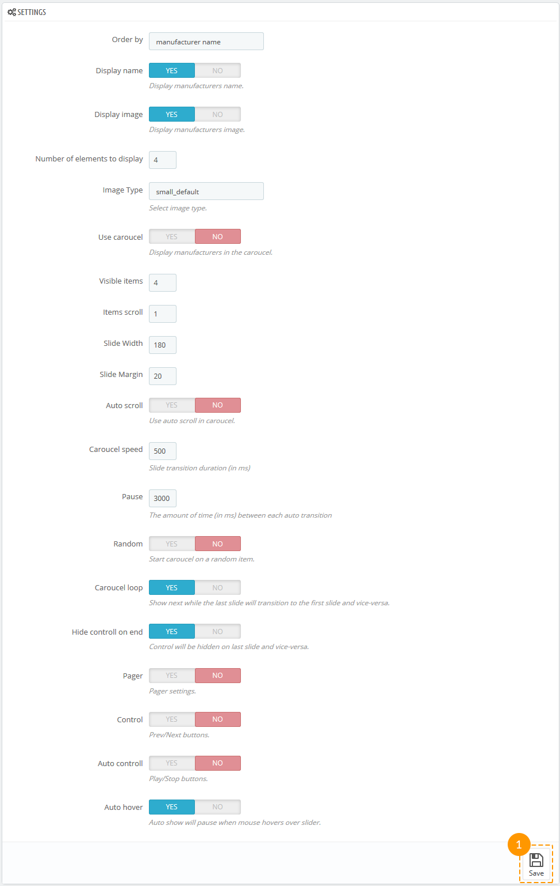
- Display name - show the manufacturer's name.
- Display image - show the image of the manufacturer.
- Number of elements to display - select the number of elements displayed in the module.
- Image Type - select the image type (you can select the image from the images related to the manufacturer).
- Use carousel - show up the list as a carousel.
- * Visible items - number of visible manufacturers.
- * Items scroll - number of manufacturers shown in one carousel scroll.
- * Slide Width - the width of the element in the carousel.
- * Slide Margin - the margin of the element in the carousel.
- * Auto scroll - automatic scrolling.
- * Carousel speed - speed of the carousel.
- * Pause - pause between scrolls(if "Auto scroll" is enabled).
- * Random - carousel start from the random element.
- * Carousel loop - carousel returns back to the beginning when all elements have been scrolled.
- * Hide control on end - hide next/previous buttons.
- * Pager - show pagination.
- * Control - show next/previous buttons.
- * Auto control - show play/pause buttons.
- * Auto hover - pausing when hovering over carousel elements.
* - settings are available only if carousel is enabled.
The module supports multi-stores.
TM Products Slider
The module shows up store products in the slider.
Installation and deleting
The module is installed and deleted like any other Prestashop module.
After installation you can change its settings on the module configuration page.
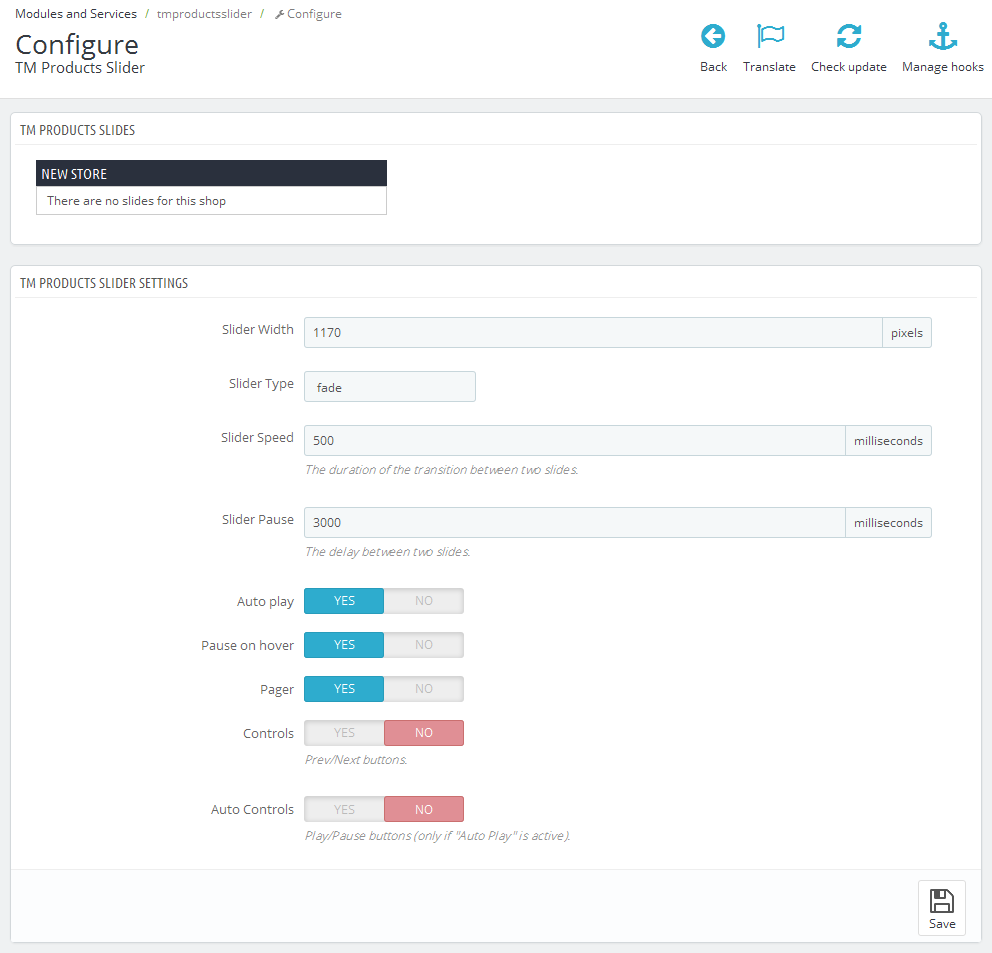
You can set the order of products in your slider using drag-and-drop method. You can also enable/disable product display in the slider.
You can set the width of slider, sliding effect, slider speed, pause, auto scroll, pause when hovering over carousel elements, slider control, next/previous buttons, play/pause buttons.
After module installation you will see the new tab in your product configuration page (Catalog-> Product-> select any product - TM Products Slider).
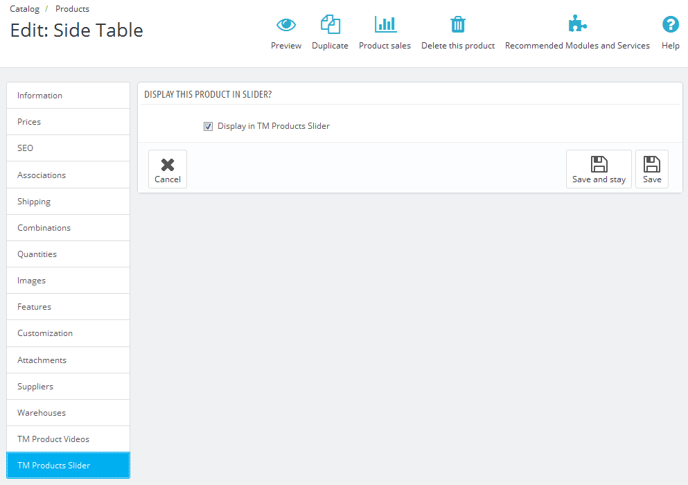
Here you can set whether the product will show up in the slider or not. After making the changes, click Save/Save and Stay button to save them.
The module supports multi-stores. You can change settings for each store, group of stores or all stores at a time.
TM Product Videos
This module allows to add unlimited number of videos to any product in any language and store.
Installation and deleting
The module is installed and deleted like any other Prestashop module. It has no configuration page and supports multi-stores.
After module installation you will see the new tab in your product configuration page (Catalog-> Product-> select any product - TM Product Videos).
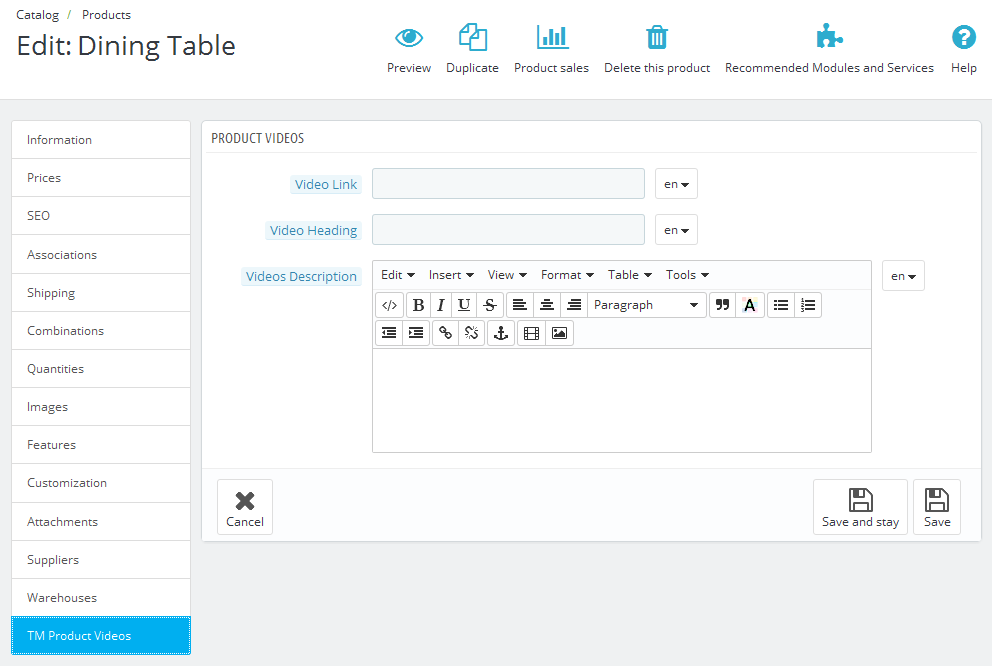
To add a video to any product, you should fill in the required fields (the link field is mandatory). The module is multilanguage, so you will have to fill in the fields for all languages this video is related to. If the Link field is not filled for any language, then the video will not be added for this language. The module is supposed to show up videos from Youtube and Vimeo, so you need to add links only from these resources. After making the changes, click Save/Save and Stay button to save them.
Examples of links
To display video properly, the links should have the following format:
Youtube -
https://www.youtube.com/v/K6VcTyaym90- Vimeo -
http://player.vimeo.com/video/66140585
If the product has video related to this language, you will see the list of videos below.
To save, delete or edit the list, there is no need to click Save/Save and Stay button. Use the buttons located in the video blocks. To change the order of videos, use drag-and-drop method to change their position. To enable/disable the video, use the button next to video. To edit the videos, fill in the fields with required data and click Update button.
To remove the video from the list, click Remove video button.
While switching languages, only the list of videos related to the language will show up.
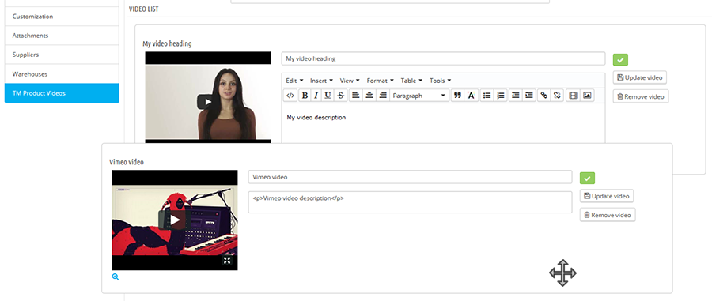
To view the video in zoomed format, click Zoom button under the video you want.
TM Social Feeds
This module loads the social networks feeds on your website. It enables the site visitors to be aware of the latest news and posts shared on the social networks.
Installation and Deleting
The module is installed and deleted like any other Prestashop module.
Module configuration
After installation you can change its settings on the module configuration page.
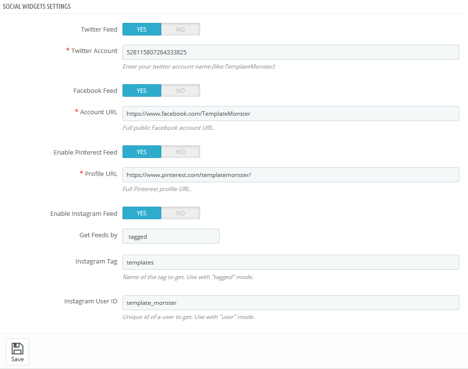
In the upper form you should add global settings for each social network. Different social networks have different settings.
It is enough to add a Widget ID which can be taken from your Twitter account.
Paste the full path to the Facebook page which feeds will be loaded. The page should be public.
For Pinterest paste the full path to the page which feeds will be loaded.
Client ID - a unique ID assigned during widget registration on Instagram.
User Name - username used to link the owner's page.
Selection type: you can set whether the images are loaded from specific user or by tag.
Tag by which images are loaded.
Id of the user whose images will be loaded.
Instagram access token - access token of the user whom the page belongs.
In the second part of the module configuration page you can add the required module to the position you want. There are 4 positions. You can add the block settings for each position. The only global setting is the data of social networks which feeds will be loaded.
Each social network has its own settings.
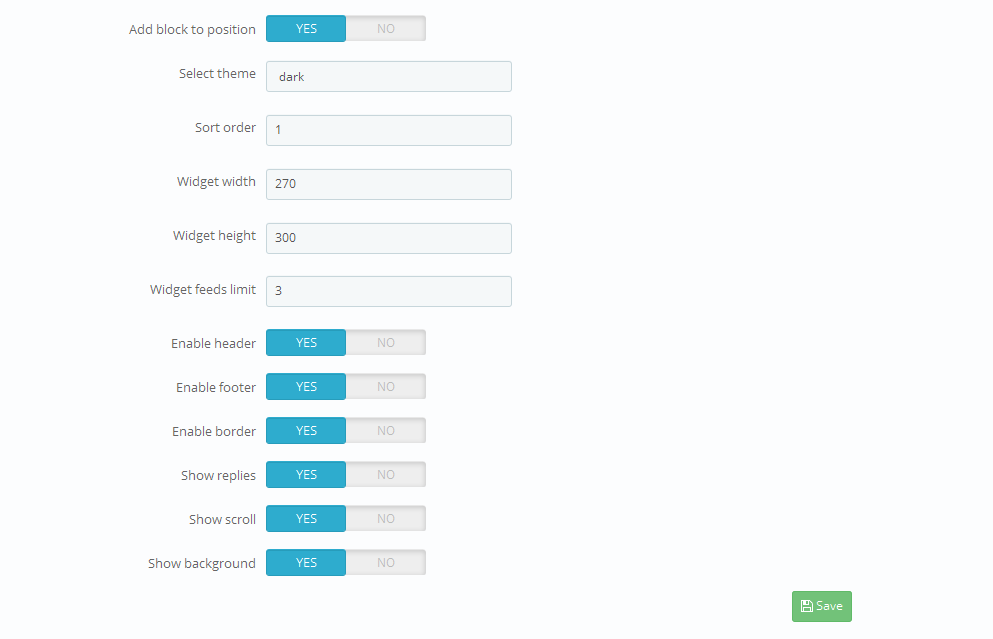
- Add block to position - display block in specific position.
- Select theme - color scheme of the block for this position.
- Sort order - sort order (order number of the block in this position).
- Widget width - block width in this position.
- Widget height - block height in this position.
- Widget feeds limit - number of feeds in the block.
- Enable header - show block title.
- Enable footer - show footer of the block.
- Enable border - show border of the block.
- Show replies - display replies to the posts.
- Show scroll - show block scroll.
- Show background - add block background or leave it transparent.
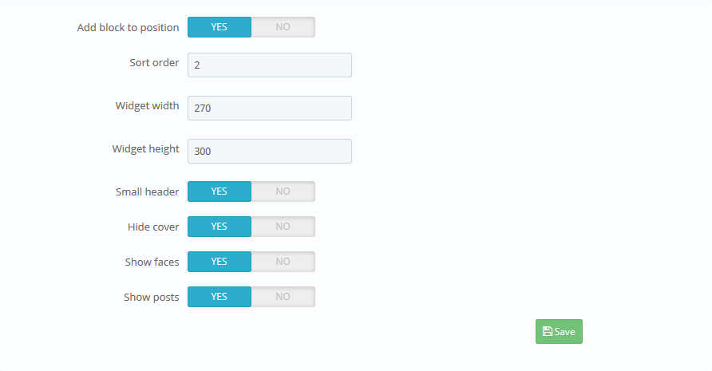
- Add block to position - display block in specific position.
- Select theme - color scheme of the block for this position.
- Sort order - sort order (order number of the block in this position).
- Widget width - block width in this position.
- Widget height - block height in this position.
- Enable header - show block title.
- Enable border - show footer of the block.
- Show faces - show photos of users who liked the page.
- Show posts - show posts from the page.
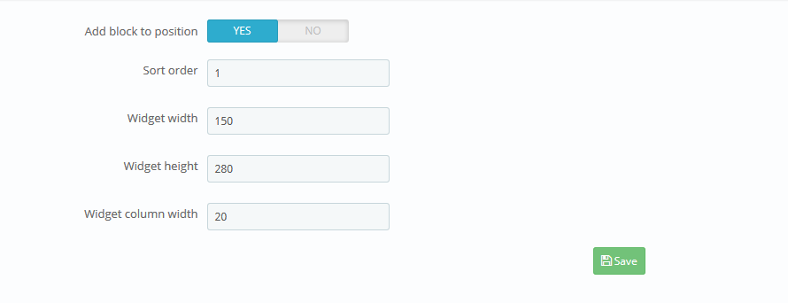
- Add block to position - display block in specific position.
- Sort order - sort order (order number of the block in this position).
- Widget width - block width in this position.
- Widget height - block height in this position.
- Widget column width - width of the block column
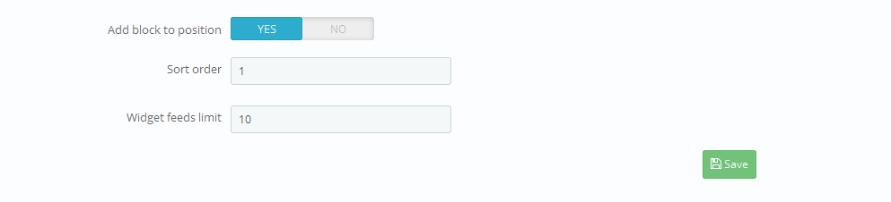
- Add block to position - display block in specific position.
- Sort order - sort order (order number of the block in this position).
- Widget feeds limit - number of feeds displayed in the block.
The module supports multi-stores.
TM Header Account
Das jeweilige Modul wurde dazu entwickelt, um das Login-Formular und die Liste von verfügbaren Elementen des Accounts im Webseitenkopf anzuzeigen. Dieses Modul ermöglicht auch dem Benutzer sich einzuloggen, ohne die Seite zu aktualisieren. Dieses Modul wurde als DropDownBlock entwickelt.
Installation und Entfernung des Moduls
Dieses Modul wird wie ein anderes PrestaShop Modul installiert und entfernt.
Moduleinstellungen
Dieses Modul hat keine zusätzlichen Einstellungen
TM Homepage Products Carousel
Das jeweilige Modul fügt das Karussell zu Tabs auf der Hauptseite hinzu.
Installation und Entfernung des Moduls
Dieses Modul wird wie ein anderes PrestaShop Modul installiert und entfernt.
Moduleinstellungen
Nachdem Sie dieses Modul installiert haben, könenn Sie es auf der Konfigurationsseite des Moduls einstellen.
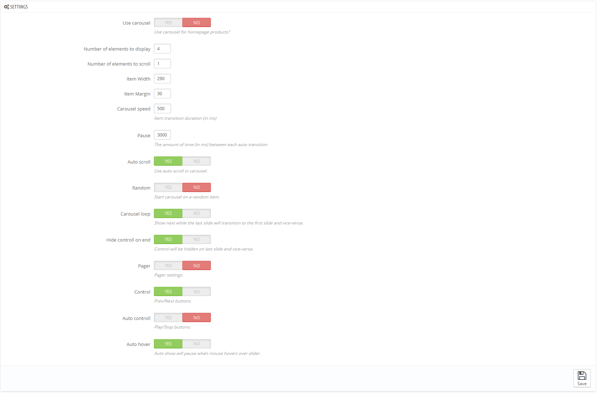
- Use carousel (Karussell verwenden) - das Karussell aktivieren/deaktivieren
- Number of elements to display (Die Anzahl von angezeigten Elementen) - die Anzahl von angezeigten Elementen
- Items scroll (Die Anzahl von Bildlaufelementen) - die Anzahl von Bildlaufelementen in einem Schritt des Karussells
- Item Width (Breite von Elementen) - die Breite des Elements in der Liste im Karussell
- Item Margin (Abstand zwischen den Elementen) - Abstand des Elementes in der Liste im Karussell
- Carousel speed (Geschwindigkeit des Karussells) - die Übergangsgeschwindigkei von Elementen
- Pause (Pause) - die Pause zwischen den Übergängen (wenn "Auto scroll" erlaubt wurde)
- Auto scroll (Automatischer Bildlauf) - automatischer Bildlauf des Karussells
- Random (zufällige Reihenfolge) - das Karussell wird mit dem zufälligen Element begonnen
- Carousel loop (Karussell Loop) - das Karussell kehrt zum Anfang, wenn es keine Elemente in der Liste gibtа
- Hide control on end (Steuerelemente ausblenden, wenn sie nicht nötig sind) - Steuerelemente ausblenden (Vor/Zurück)
- Pager (Paginierung) - die Steuerung mit Hilfe von der Paginierung anzeigen
- Control (Steuerelemente) - Buttons (Vor/Zurück) anzeigen
- Auto control (Steuerelemente) - Buttons (Wiedergabe/Pause) anzeigen
- Auto hover (Pause, sobald der Cursor darüber ist) - die Pause im Karussell, sobald der Cursor über einem von den Elementen ist
TM Product List Gallery
Das jeweilige Modul zeigt alle verfügbaren Produktbilder als Karussell auf den Produktlistenseiten.
Installation und Entfernung des Moduls
Dieses Modul wird wie ein anderes PrestaShop Modul installiert und entfernt.
Moduleinstellungen
Dieses Modul hat keine zusätzlichen Einstellungen
Zusätzliche Einstellungen
Damit dieses Modul funktionieren kann, sollen Sie die folgende Zeile:
{hook h='displayProductListGallery' product=$product}
zur Datei product-list.tpl im Stamm Ihres Themas hinzufügen. Nach dem schließenden Tag </a> mit der Klasse .product_img_link
Olark Live Chat
Um solchen Online-Chat einzustellen, wie auf Live Demo, sollen Sie sich auf der offiziellen Webseite Olark anmelden. Nachdem Sie alle Daten eingegeben haben, erhalten Sie den Code, den Sie zur Datei \themes\themeXXX\footer.tpl vor dem Tag </body>hinzufügen müssen.
Cookie-Politik
Cookies sind kleine Textdateien, die die Webseiten auf den Computern der Besucher platzieren. Gewöhnlich werden sie zur Kundenidentifikation benutzt und sie erleichtern auch die Benutzung der Webseite. Cookies sind ein fester Bestandteil der Funktionen der Webseite, die wir immer nutzen.
Zum Beispiel, mittels Cookie speichern Online-Shops diejenigen Produkte, die Sie in den Warenkorb hinzugefügt haben. Cookies ermöglichen auch den Benutzern "im System" auf der Webseite zu bleiben und den Inhabern der Webseite die wichtige Information und Statistik über die Besucher zu bekommen.
Wenn Sie die Webseite haben, wird Cookie höchstwahrscheinlich auf dieser Webseite benutzt. Cookie wird meistens benutzt, um die Menge und Verhalten der Besucher zu folgen (indem man Werkzeuge Google Analytics nutzt). Man nutzt Cookies, um die aktuellen Angebote für die Besucher anzuzeigen. Cookies werden auch benutzt, damit die Werkzeuge des Online-Shops funktionieren können.
Am 26. Mai 2012 ICO Organisation hat die Änderungen zu den Rechtsvorschriften über Cookies veröffentlicht. Seitdem "diese Vereinbarung" erlaubt wurde, müssen Sie unbedingt zeigen, wo auf der Webseite Ihre Datenschutzrichtlinie und Cookies sind.
Zur Bequemlichkeit haben Sie das Modul Cookieslaw zum Ihrem Thema hinzugefügt.
Es kann einfach eingestellt werden.
- Finden Sie es in dem Ordner manual_install Ihrer Vorlage (wenn Sie die Vorlage manuell mit den Demodaten installiert haben, wird das Modul automatisch hinzugefügt).
-
Dann finden Sie es in der Liste von Modulen im Control Panel (Modul Cookieslaw im Bereich "Funktionen front-office") und drücken Sie auf den Button Install (Installieren).
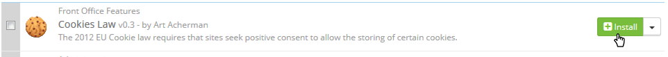
-
Nach der Installation (überspringen Sie diesen Schritt, wenn Sie automatisch zur Seite der Moduleinstellungen gelangen sind) drücken Sie den Button Configure (Einstellen).
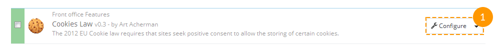
-
Legen Sie alle notwendigen Einstellungen fest und drücken Sie auf den Button Save (Speichern).
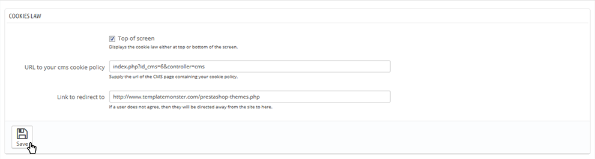
Einstellungen:- - Display at the top of the page(by default) (In dem oberen Teil der Seite darstellen (standardmäßig)). Wenn Sie diese Option aktivieren, wird das Modul in dem unteren Teil der Seite dargestellt.
- - Cookies Policy link (Link zur Cookie-Politik).
- - Link to the page where the user is redirected in case he does not accept the Cookies Policy (Link zur Seite, wo der Benutzer wird, falls er mit der Cookie-Politik nicht einverstanden ist).
Wir empfehlen auch die folgenden Module:
Mehr mit wem muss man den Kontakt aufnehmen, um die Hilfe, Unterstützung und zusätzliche Information zu bekommen
Wir haben diese Dokumentation für Sie ausführlich und verständlich gemacht. Aber wenn Sie auf Schwierigkeiten bei der Arbeit mit der PrestaShop Vorlage stoßen oder Tipps zur Verbesserung von Vorlagen und Dokumentationen haben, können Sie dann den Kontakt mit der technischen Unterstützung wie folgt aufnehmen:
Hilfe und Unterstützung
Nützliche Links
- Offizielle Website PrestaShop
- Herunterladen
- Addons: Module, Themen, usw.
- Dokumentation auf Englisch
- Forum
- Wiki
- Tutorials über PrestaShop
Hochladen von Daten von Google Servern
In einigen Ländern gibt es Probleme mit der Verbindung mit Google Servern, deswegen kann es Schwierigkeiten beim Hochladen von Google Fonts Schriften und Java Script Bibliotheken mit Google CDN auftreten. In diesem Fall sollen Sie das Folgende machen:
Wenn Sie Google Fonts Schriften nicht hochladen können:
Öffnen Sie die Datei \themes\theme****\header.tpl.
Finden Sie die Zeile:
<link rel="stylesheet" href="http{if Tools::usingSecureMode()}s{/if}://fonts.googleapis.com/css?family=[---your_web_font_name_here---]" type="text/css" media="all" />Ersetzen Sie sie durch:
<link rel="stylesheet" href="http://fonts.useso.com/css?family=[---your_web_font_name_here---]" type="text/css" media="all" />